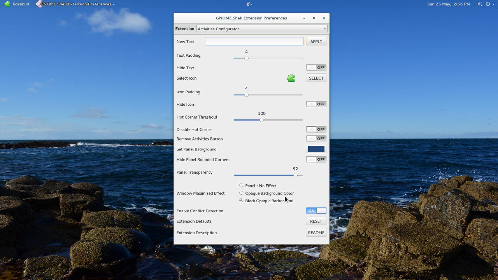

This extension enhances the dash moving it out of the overview and transforming it in a dock for an easier launching of applications and a faster switching between windows and desktops without having to leave the desktop view.
For installation instructions and more information visit https://micheleg.github.io/dash-to-dock/.
The extension can be installed directly from source, either for the convenience of using git or to test the latest development version. Clone the desire branch with git
git clone https://github.com/micheleg/dash-to-dock.git
or download the branch from github. A simple Makefile is included. Then run
make make install
to install the extension in your home directory. A Shell reload is required Alt+F2 r Enter and the extension has to be enabled with gnome-tweak-tool or with dconf.
Bugs should be reported to the Github bug tracker https://github.com/micheleg/dash-to-dock/issues.
Dash to Dock Gnome Shell extension is distributed under the terms of the GNU General Public License, version 2 or later. See the COPYING file for details.
You can

or